Primero debemos tener instalado Oracle Virtual Box para poder usar la herramienta de software libre linux, para descgargar el servidor de ubuntu vamos a nuestro navegador preferido (En mi caso Firefox) en el buscador escribimos "Ubuntu Server" en los resultados estara el link directo para descargar el ubuntu o copias este link: "https://www.ubuntu.com/download/server" y lo descargamos.
Ahora en el Virtual Box haremos la nueva maquina virtual, primero le daremos click en "Nueva".
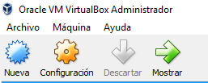Nos pedira que le pongamos un nombre le ponemos "Ubuntu" y el virtual box ya identificara que es un software de linux.
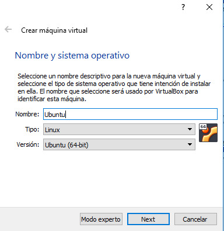Ahora elegimos cuanta memoria queremos darle a la maquina virtual, demosle 2 gb ya que de ser solo consola no necesita tantos recursos.
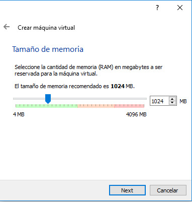Ahora clickeamos las opciones de las siguientes imagenes:
1.-
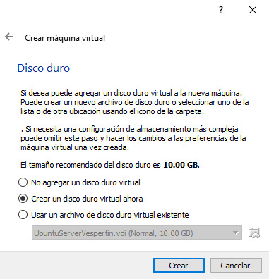2.-
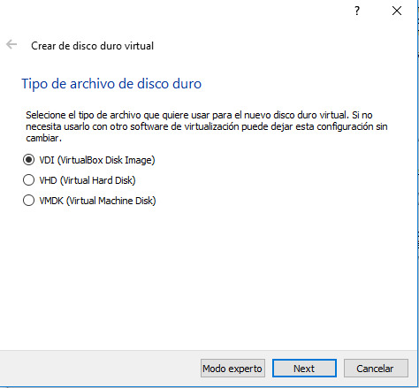3.-
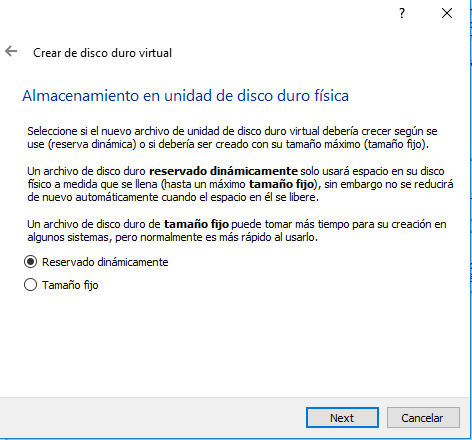Aqui nos pedira cuanto almacenamiento en disco queremos darle, ponemos 10GB ya que no es necesario darle más y damos click en crear.
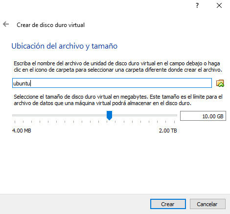Despues de todo este proceso vamos a configurar la red anfitrion, para eso damos click en "Configuración", en donde dice "red" clickeamos, damos click en concectado a,selecionamos la opcion de solo-anfitrion y damos click en aceptar.
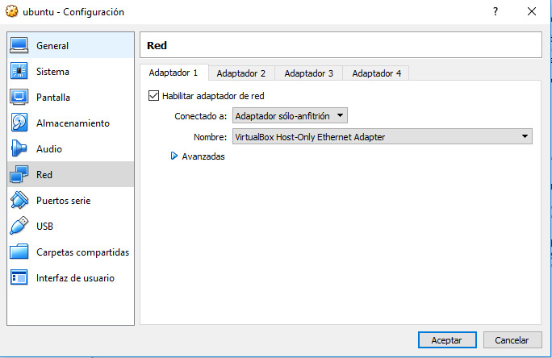Ahora donde se nos creo la nueva maquina le damos a "Iniciar", nos pedira que seleccionemos el ubuntu en nuestra maquina, para eso damos click en la carpeta que esta en la derecha y seleccionas el ubuntu.iso y damos click en iniciar.
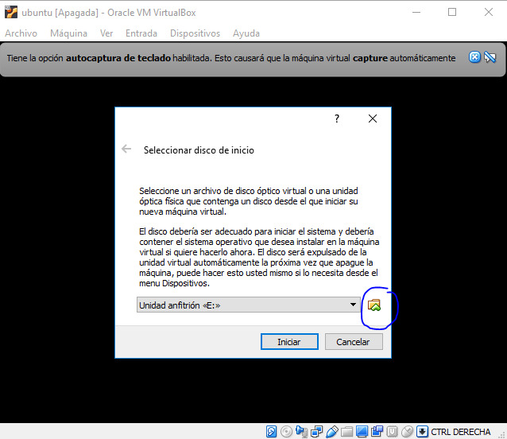Nos empezara a cargar el ubuntu. Una vez termine de cargar nos aparecera esta ventana para configurar ubuntu comenzando por el idioma.
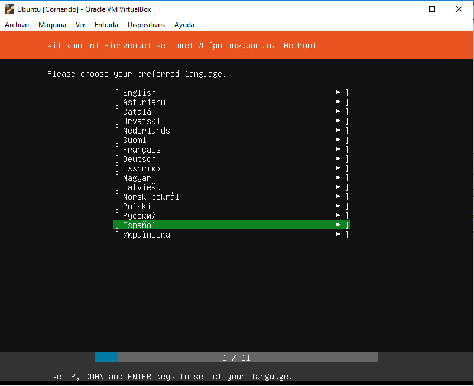Aqui damos en Indentify keyboar para que identifique nuestro teclado y no haya problemas para escribir nuestros comandos, slo selecionamos y damos enter, nos dira que presionemos diferentes teclas de nuestro teclado, despues de terminar selecionamos hecho y damos enter.
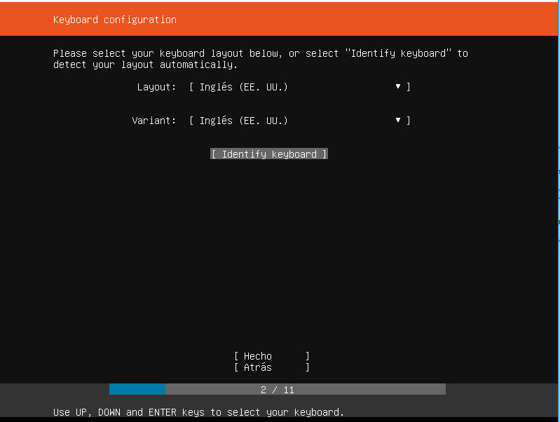Aqui damos enter en instalar ubuntu.
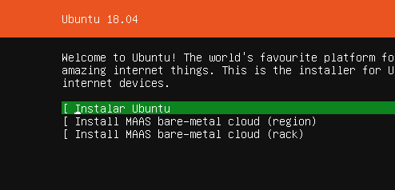En esta ventana solo damos en hecho.
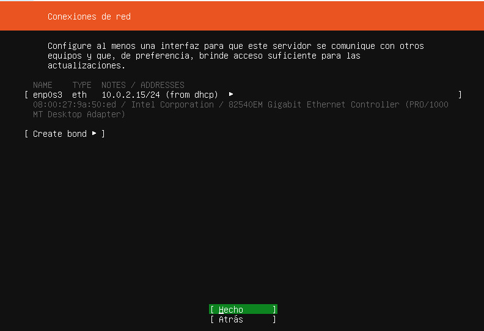Aqui igual solo damos en hecho.

Aqui tambien damos enter en hecho.
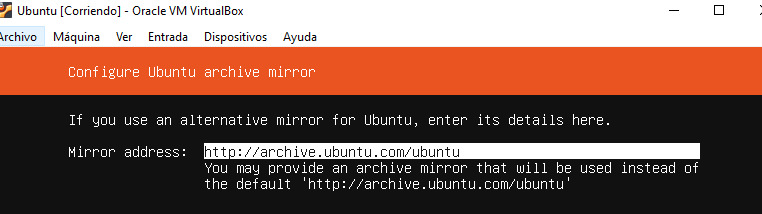En esta parte selecionamos en "manual".
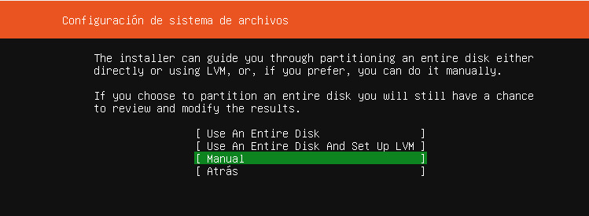Aqui nos aparecera el disco duro de la maquina virtual, lo que tenemos que hacer es seleccionarla y dar en add partition
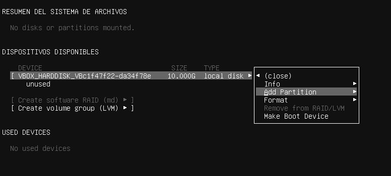Nos aparecera esta ventana, le damos 5G (5GB) y damos en create, y despues en hecho.
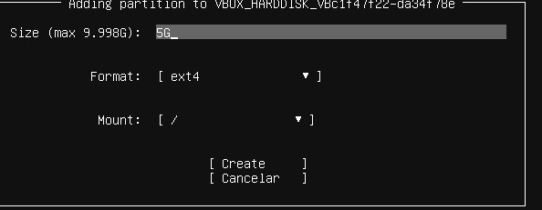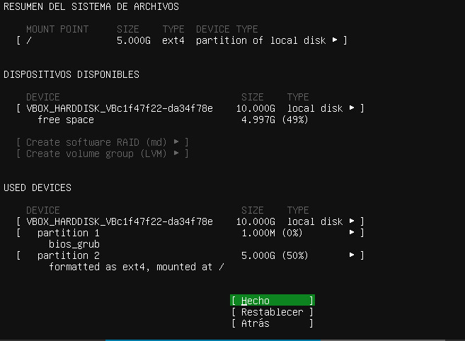Ahora tendremos que poner nuestros datos como el nombre de usuario del servidor de ubuntu.
Despues de hacer todos estos pasos damos en Instalar ubuntu y se empezara a instalar como en esta imagen.
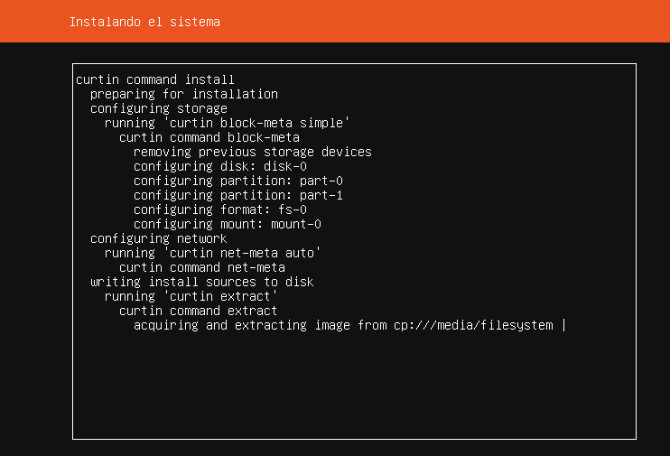Ya que termine la instalacion nos pedira que nos logeemos, escribimos el usuario que pusimos anteriormente y la contraseña, ahora podremos usar ubuntu y ejecutar comandos.